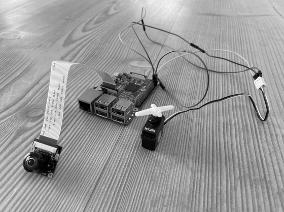

BrightSight
Unlocking the Visual World: Harnessing the Lottery Ticket Hypothesis for State-of-the-Art Monocular Depth Estimation in Embedded Glasses to Empower the Visually Impaired.
Abstract
This paper presents the deep learning approach to help the visually impaired in an object detection task: recognising the gender of people in their proximate surrounding. By use of images coming from a RPI WWCAM2 monocular camera, the person is first detected , i.e. localized in the image, and then classified to one of the two genders. In order to perform gender detection in real-time, the use of transfer learning together with a single-stage object detection algorithm was investigated. Based on the number of processed frames per second (FPS) and the mean average precision (mAP), it was concluded that fine-tuning a pre-trained YOLOv4 algorithm on customized versions of the Pascal VOC 2007 dataset and the CelebA dataset is best suited for this task.
Additional information can be found in the downloadable PDF of the BSc Thesis paper.
Conclusion
The main aim of this thesis was to find the best deep learning object detection architecture for a gender detection model to aid the visually impaired in their social life. A literature comparison of the three state of the art object detection architectures showed that, from the three one-stage object detection architectures, the YOLOv4 architecture outperforms all other architectures. Therefore, based on this research, the YOLOv4 architecture seemingly has the most potential for the artificial visual system. To support this conclusion, further research should aim to modify the head of the three state of the art object detection architectures to the gender detection task, train and test the modified architectures on a representative gender dataset, and finally compare the numerical results.
Code implementation
Code for this blog: